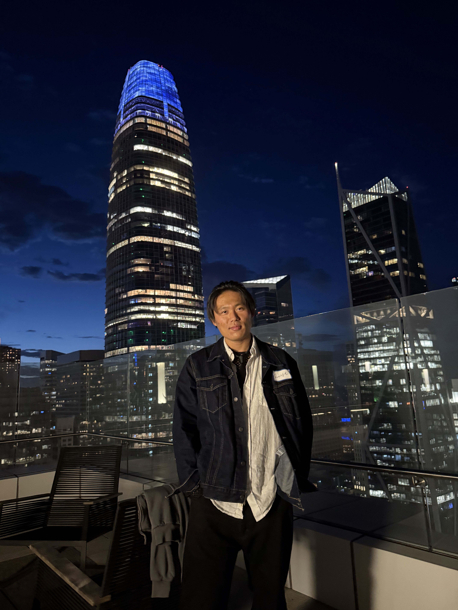

Currently, I perform software, hardware trouble shooting on NVIDIA's AI cluster - GB300 as well as
leading test case development at Quanta Manufacturing Fremont.
I hold master and bachelor in computer science at San Jose State University. My main research focus is security
When I'm not on the main mission, I'm usually performing side-quests.
I enjoy crafting clean, human-centered experiences across web, design, and storytelling. I’m drawn to the kind of work that feels clear, calm, and genuinely useful.
If you’d like to collaborate, share an idea, or just say hi, feel free to reach out.